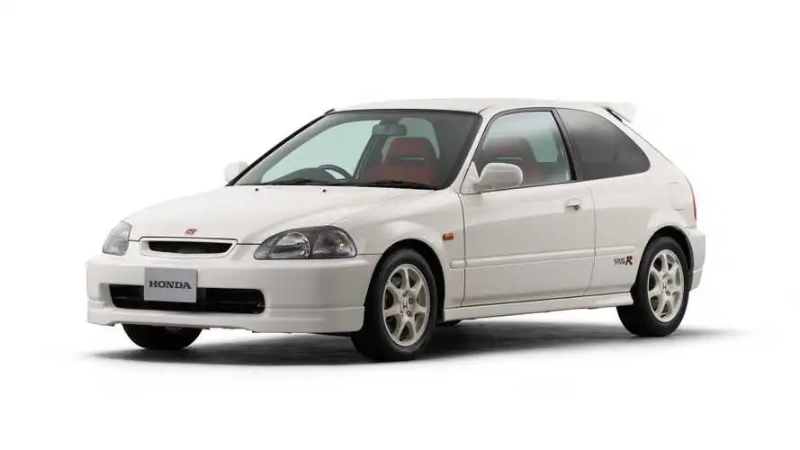
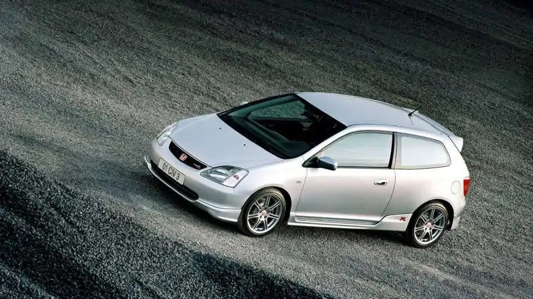
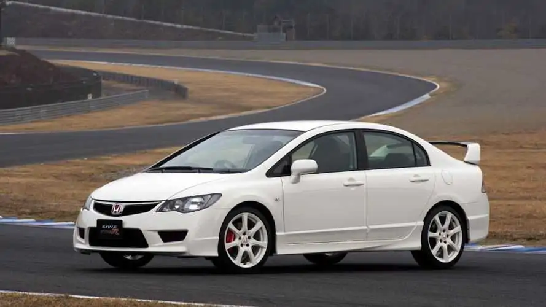
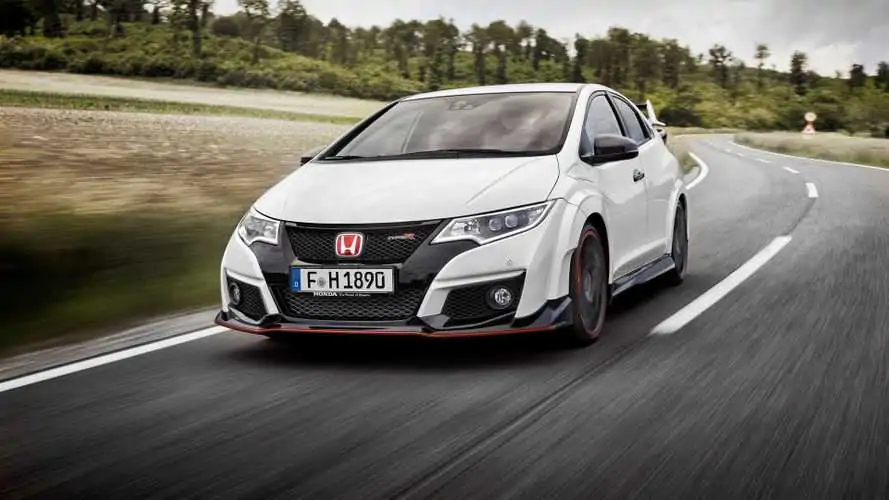
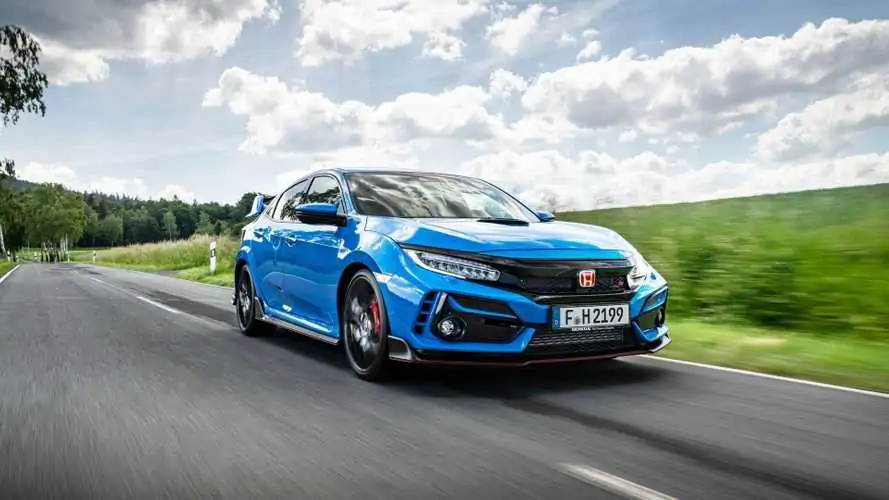

1° Geração
- Primeiro Civic Type R.
- 185 cv (8.200 rpm) e 16,3 kgfm (7.500 rpm).
- 0 a 100 km/h em 6,7 segundos e a velocidade máxima de 225 km/h.
2° Geração
- Começou a ser produzido na Inglaterra, ganhando espaço na Europa.
- 200 cv (7.400 rpm) e 20 kgfm (5.900 rpm) (Europa); 215 cv (8.000 rpm) e 20,6 kgfm (7.000 rpm).
- Câmbio manual de 6 marchas.
3° Geração
- O primeiro Honda Civic SI a ser porduzido no Brasil.
- 225 cv (8.000 rpm) e 21,9 kgfm (6.100 rpm); 201 cv (7.800 rpm) e 19,7 kgfm (5.600 rpm) (Europa).
- Câmbio manual de 6 marchas.
4° Geração
- A quarta geração do Civic Type R é a primeira a ser turbo.
- 310 cv (6.500 rpm) e 40,8 kgfm (de 2.500 a 4.500 rpm).
- Câmbio manual de 6 marchas
5° Geração
- Redesenho total: visual agressivo, juntando esportividade com elementos da decima geração do Civic.
- 310 cv (6.500 rpm) e 40,8 kgfm (de 2.500 a 4.500 rpm); 320 cv (7.000 rpm) e 40,8 kgfm (de 2.500 a 4.500 rpm) (Europa e Japão).
- Câmbio manual de 6 marchas.
6° Geração
- Design mais elegante e refinado.
- C330 cv (6.500 rpm) e 42,8 kgfm (2.600 a 4.000 rpm).
- Câmbio manual de 6 marchas.